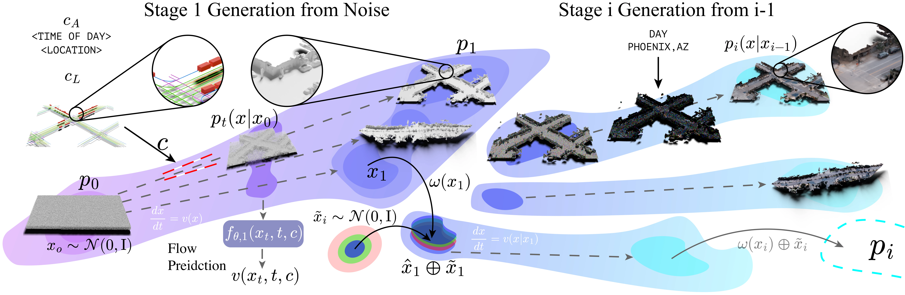
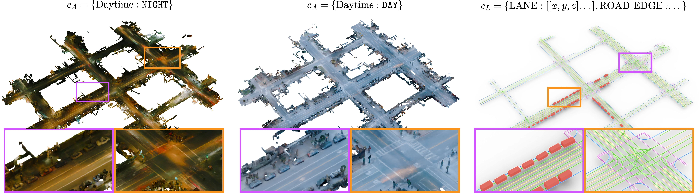
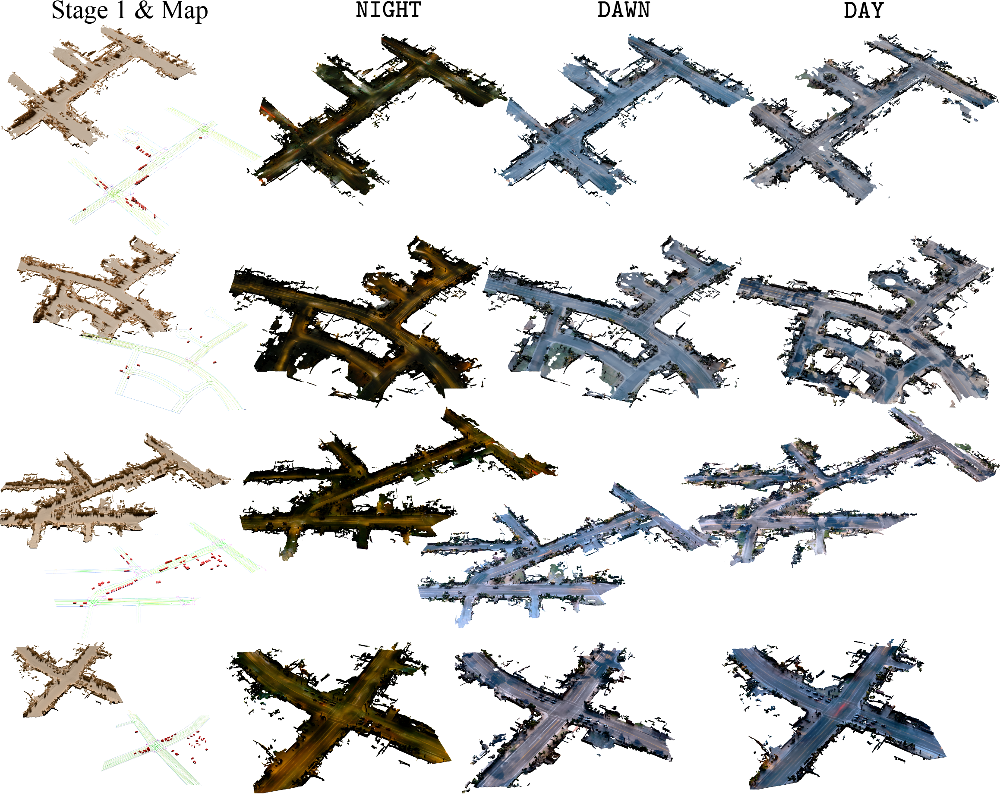

Summary
Unbounded 3D world generation is emerging as a foundational task for scene modeling in computer vision, graphics, and robotics. We present WorldFlow3D, a novel method capable of generating unbounded 3D worlds. Building upon a foundational property of flow matching – defining a path of transport between two data distributions – we model 3D generation more generally as a problem of flowing through 3D data distributions, not limited to conditional denoising. Our latent-free flow approach generates causal and accurate 3D structure, and can use this as an intermediate distribution to guide the generation of more complex structure and high-quality texture – all while converging more rapidly than existing methods. We enable controllability over generated scenes with vectorized scene layout conditions for geometric structure control and visual texture control through scene attributes. We validate WorldFlow3D on both real outdoor driving scenes and synthetic indoor scenes, confirming cross-domain generalizability and high-quality generation.
Flowing Through 3D Distributions
WorldFlow3D decomposes generation into a sequence of independent flows over progressively richer representations – transporting from noise, through coarse geometry into fine geometry, and visual appearance. All flows operate directly in raw volumetric space, enabling a latent-free, hierarchical scene generation procedure. Generation is controlled by a vectorized geometric layout and discrete scene attributes, giving consistent structural and semantic control at every level. We introduce an extension to existing schedulers by aligning predicted flow fields across smaller chunks at inference time, unlocking truly unbounded scene generation without visible border artifacts.

Controllable Scene Generation
WorldFlow3D enables explicit control over generated scenes through vectorized geometric layouts for structure and discrete scene attributes for visual texture. Below we show generations conditioned on varying layouts and attributes, producing diverse environments with high-fidelity geometry and realistic appearance.

We further demonstrate the diversity of conditional generations below. Given the same geometric layout, WorldFlow3D produces varied scene realizations with distinct textures and environmental conditions, highlighting the expressiveness of our flow-based generation approach.

Baseline Comparisons
WorldFlow3D outperforms existing baselines across multiple data distributions, demonstrating not only high geometric fidelity but also a high degree of geometric diversity. We compare against XCube, LidarDM, LT3SD, BlockFusion, and WorldGrow on both outdoor driving scenes (Waymo) and indoor rooms (3D-FRONT), confirming favorable scene generation fidelity in all tested settings. A blind user study further confirms that users prefer our results with high significance over all baseline methods.
Outdoor (Waymo)
Indoor (3D-FRONT)
Synthetic 3D City Evaluation
We evaluate WorldFlow3D on large-scale scene generation using the synthetic 3D-City dataset. Compared to LT3SD, a recent baseline retrained on this dataset, our method produces higher-quality 3D geometric structure and more coherent overall scene layouts. WorldFlow3D faithfully respects road topology and captures finer details such as the placement of streetlights and building facades.

BibTeX
@article{worldflow3d,
title = {WorldFlow3D: Flowing Through 3D Distributions for Unbounded World Generation},
author = {Joshi, Amogh and Ost, Julian and Heide, Felix},
year = {2026},
}
Related Work: Street-Level 3D Generation
Also check out our related work LSD-3D: Large-Scale 3D Driving Scene Generation with Geometry Grounding, which generates large-scale 3D driving scenes with accurate geometry grounding using 2D diffusion priors.